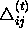
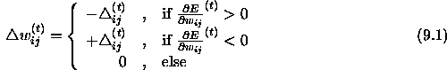
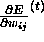
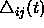
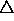
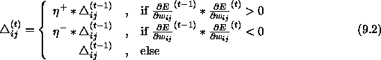
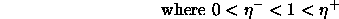
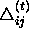
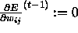
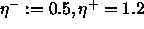

Rprop stands for ' Resilient back propagation' and is a local adaptive learning scheme, performing supervised batch learning in multi-layer perceptrons. For a detailed discussion see also [Rie93], [RB93]. The basic principle of Rprop is to eliminate the harmful influence of the size of the partial derivative on the weight step. As a consequence, only the sign of the derivative is considered to indicate the direction of the weight update. The size of the weight change is exclusively determined by a weight-specific, so-called 'update-value'

:

where

denotes the summed gradient information over all patterns of the pattern set ('batch learning').It should be noted, that by replacing the

by a constant update-value
, equation (
The second step of Rprop learning is to determine the new
update-values  . This is based on a sign-dependent adaptation
process.
. This is based on a sign-dependent adaptation
process.


In words, the adaptation-rule works as follows: Every time the partial
derivative of the corresponding weight  changes its sign,
which indicates that the last update was too big and the algorithm has
jumped over a local minimum, the update-value
changes its sign,
which indicates that the last update was too big and the algorithm has
jumped over a local minimum, the update-value

is decreased by the factor . If the derivative retains its
sign, the update-value is slightly increased in order to accelerate
convergence in shallow regions. Additionally, in case of a change in
sign, there should be no adaptation in the succeeding learning
step. In practice, this can be achieved by setting
. If the derivative retains its
sign, the update-value is slightly increased in order to accelerate
convergence in shallow regions. Additionally, in case of a change in
sign, there should be no adaptation in the succeeding learning
step. In practice, this can be achieved by setting 
in the above adaptation rule (see also the description of the algorithm in the following section).In order to reduce the number of freely adjustable parameters, often leading to a tedious search in parameter space, the increase and decrease factor are set to fixed values (

).For Rprop tries to adapt its learning process to the topology of the error function, it follows the principle of 'batch learning' or 'learning by epoch'. That means, that weight-update and adaptation are performed after the gradient information of the whole pattern set is computed.